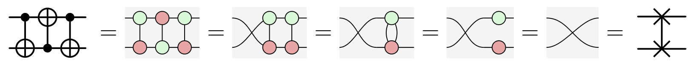

I am a researcher with a particular interest in the mathematical foundations of quantum information theory. In no particular order, I have worked on: diagrammatic calculi for higher-dimensional quantum systems, measurement-based quantum computation beyond qubits, measures of non-classicality in quantum theory, and quantum computational advantages in continuous variables. Beyond continuing to develop these techniques, I am interested in applying them to more practical problems for near-term quantum computation. A particular focus at the moment is developing algorithms and techniques for the fault-tolerant compilation of quantum computations.
News
- October 2025: Cole Comfort and I have a new preprint on Denotational semantics for stabiliser quantum programs.
- September 2025: Our paper “Can effective descriptions of bosonic systems be considered complete?” was accepted to Nature Communications!
- July 2025: I gave a talk at QPL 2025.
- June 2025: I started a new job as Research Associate in Quantum Software at the Oxford Quantum Group.
Publications
Peer-reviewed- Flow conditions for continuous variable measurement-based quantum computing Robert I. Booth and Damian Markham
- The Qupit Stabiliser ZX-travaganza: Simplified Axioms, Normal Forms and Graph-Theoretic Simplification Boldizsár Poór, Robert I. Booth, Titouan Carette, John van de Wetering and Lia Yeh
- Outcome determinism in measurement-based quantum computation with qudits Robert I. Booth, Aleks Kissinger, Damian Markham, Clément Meignant and Simon Perdrix
- Contextuality and Wigner negativity are equivalent for continuous-variable quantum measurements Robert I. Booth, Ulysse Chabaud and Pierre-Emmanuel Emeriau
- Complete ZX-Calculi for the Stabiliser Fragment in Odd Prime Dimensions Robert I. Booth and Titouan Carette
- Bridging thermodynamics and metrology in nonequilibrium quantum thermometry Vasco Cavina, Luca Mancino, Antonella de Pasquale, Ilaria Gianani, Marco Sbroscia, Robert I. Booth, Emmanuele Roccia, Roberto Raimondi, Vittorio Giovanetti and Marco Barbieri
- Geometrical Bounds on Irreversibility in Open Quantum Systems Luca Mancino, Vasco Cavina, Antonella de Pasquale, Marco Sbroscia, Robert I. Booth, Emmanuele Roccia, Ilaria Gianani, Vittorio Giovanetti and Marco Barbieri
- Denotational semantics for stabiliser quantum programs Robert I. Booth and Cole Comfort
- Engineering CSS surgery: compiling any CNOT in any code Clément Poirson, Joschka Roffe and Robert I. Booth
- Can effective descriptions of bosonic systems be considered complete? Francesco Arzani, Robert I. Booth and Ulysse Chabaud
- Complete equational theories for classical and quantum Gaussian relations Robert I. Booth, Titouan Carette and Cole Comfort
- Graphical Symplectic Algebra Robert I. Booth, Titouan Carette and Cole Comfort
firstname (dot) lastname (at) cs.ox.ac.uk
Quantum Group
University of Oxford